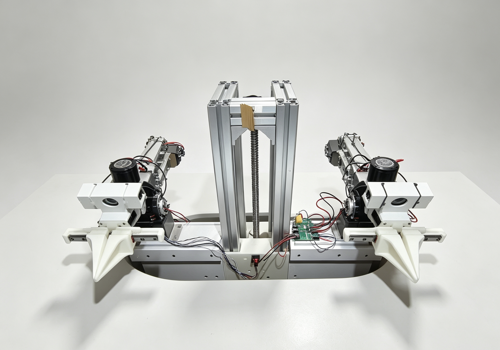
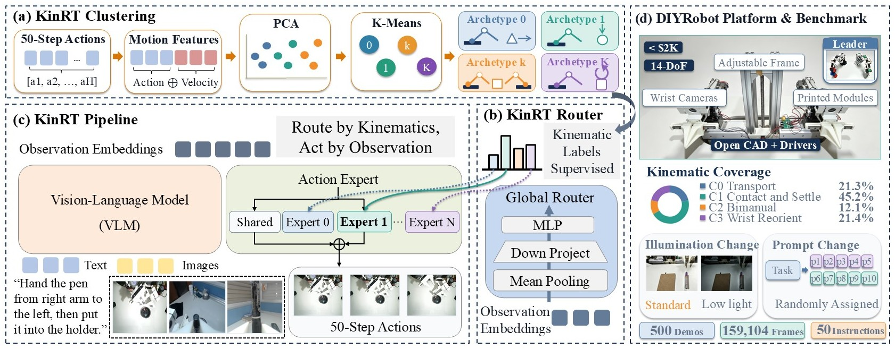

Discover archetypes
Encode 50-step trajectories, apply PCA, and cluster the action space into coherent motion regimes.

Kinematics-supervised expert routing
Route by Kinematics, Act by Observation
Action trajectories teach a global router which motion expert to select. At deployment, the policy routes from the current visual-language observation only.
Tsinghua University · Pengcheng Lab · *Equal contribution · †Corresponding authors
The routing problem
Implicit MoE routers learn expert assignment from appearance and language alone. Robot manipulation breaks that assumption: similar scenes can demand different trajectories, while different objects can share the same kinematic structure.
KinRT uses privileged action information only during training. It clusters action and velocity into kinematic archetypes, supervises the router with those labels, and transfers that structure into observation-only routing at inference.
Method
KinRT discovers motion archetypes offline, uses their IDs to train a lightweight router, and activates one routed expert alongside a shared expert for every action chunk.

Encode 50-step trajectories, apply PCA, and cluster the action space into coherent motion regimes.
Use cluster IDs as explicit labels for a global router trained from pooled observation embeddings.
Select one specialized expert using the current images, instruction, and proprioceptive state.
Key results
Reported values are average successful trials across eight RoboTwin tasks and five DIYRobot tasks.
| Benchmark | Dense baseline | KinRT | Absolute gain | Relative gain |
|---|---|---|---|---|
| RoboTwin 2.0 Easy / Hard | 33.1 / 34.1 | 40.8 / 38.8 | +7.7 / +4.7 | +23.26% / +13.78% |
| DIYRobot | 29.6 | 35.6 | +6.0 | +20.27% |
KinRT also surpasses the strongest implicit-routing MoE baseline, AdaMoE, by +8.7/+9.4 successes on RoboTwin Easy/Hard and by +14.2 successes on DIYRobot.
Evaluation
RoboTwin uses Easy and Hard conditions. DIYRobot keeps a 50-trial original-environment test protocol, with altered-lighting demonstrations available only as optional training data.
Open-source reproduction
The release keeps KinRT FULL and LoRA in one source tree and separates simulator, dataset, checkpoint, and hardware prerequisites explicitly. Start with the software-only validation gate before training or connecting a robot.
Citation
Use the arXiv record while the archival publication metadata is pending.
@article{yang2026route,
title={Route by Kinematics, Act by Observation:
Kinematics-Supervised Expert Routing in MoE-Augmented VLA},
author={Yang, Tianhang and Zheng, Yanze and Wang, Junjie and
Kou, Wei-Bin and Li, Ruotong and Yang, Yujiu},
journal={arXiv preprint arXiv:2607.26807},
year={2026}
}